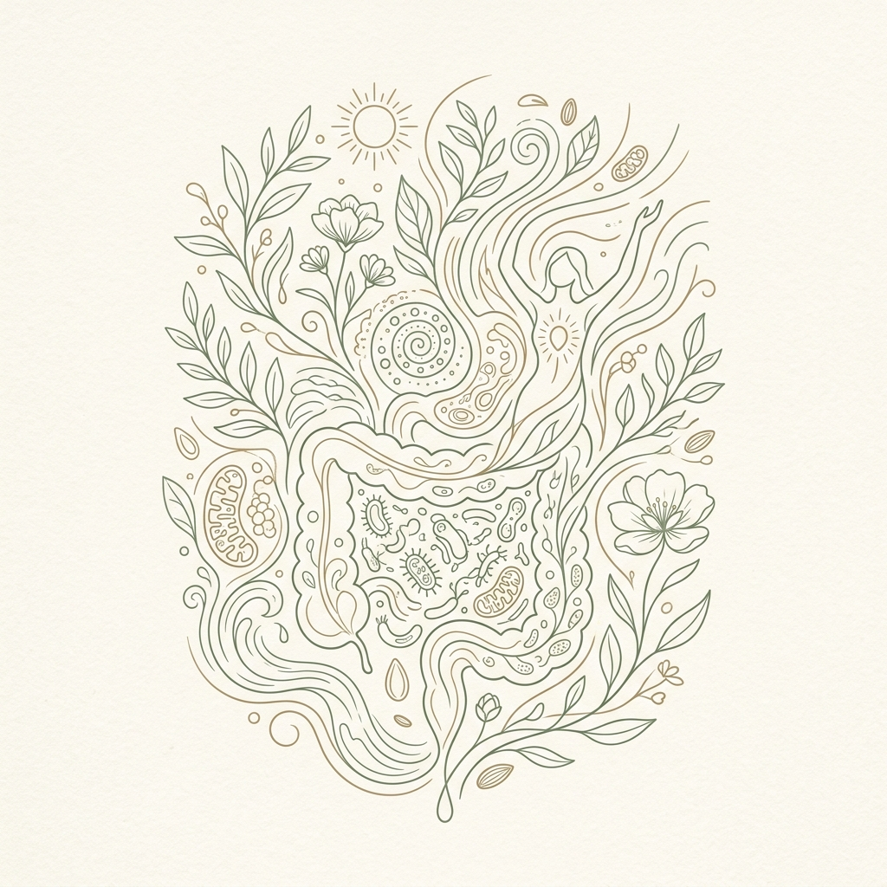

Практикующий нутрициолог, health-коуч ECA, нейрокоуч (МГУ/YOM) и создатель суперфудов BioNutri. Корректирую состояние организма и вес научно обоснованными, немедикаментозными методами — через питание, работу с образом жизни, сном, стрессом и мышлением.

Я убеждена, что дефицит энергии, лишний вес или проблемы с ЖКТ — это не норма, а сигналы организма о дисбалансе. Моя задача — разгадать эти сигналы и предложить физиологичные, бережные решения.
В своей практике я совмещаю глубокие знания клинической нутрициологии с передовыми коучинговыми технологиями. Являюсь сертифицированным специалистом международной ассоциации коучей ECA, а также экспертом крупных ЗОЖ-брендов 4fresh, iTAB и сервиса «Ешь Деревенское».
Постоянно развиваюсь, чтобы давать клиентам только проверенные и безопасные методики оздоровления.
Елена, 34 года
Постоянные срывы на сладкое к вечеру, чувство вины за еду, лишний вес (+12 кг), который возвращался после жестких диет. Тревога из-за каждого приема пищи.
Снижение веса на 9 кг за 3 месяца. Полное отсутствие тяги к сладкому, спокойный выбор продуктов, еда без чувства вины и ровный уровень энергии.
Нейрокоучинг для проработки триггеров стресса + сбалансированная тарелка без жестких запретов и ограничений.
Михаил, 29 лет
Хроническое вздутие и тяжесть после любого приема пищи, дискомфорт в кишечнике, туман в голове, непреодолимая тяга к сладкому и выпечке.
Полное исчезновение вздутий и дискомфорта. Очистилась кожа, ушел «туман в голове», восстановилась легкая и регулярная работа кишечника.
Внедрение протокола 5R по восстановлению слизистой ЖКТ, поддержка желчеоттока, точечные нутрицевтики и детокс-поддержка.
Анна, 41 год
Утреннее чувство разбитости, 4+ чашки кофе в день, апатия, плохой сон (пробуждения в 3 ночи без возможности уснуть), глубокие дефициты.
Просыпается бодрой без будильника, сон крепкий и глубокий всю ночь. Отказ от кофе, вернулся фокус на задачах и жизненный тонус.
Синхронизация циркадных ритмов, нутритивная поддержка надпочечников, устранение дефицитов (железо, D3, магний, витамины B).
Вы заполняете подробную анкету о питании, образе жизни, уровне стресса и симптомах. Это помогает мне увидеть целостную картину состояния вашего организма.
На основе анкеты я составляю персональный список анализов. Вы не сдаете лишнего — только те показатели, которые необходимы для решения вашего запроса.
Мы созваниваемся (до 60 минут), детально разбираем ваше состояние, симптомы и дефициты. Составляем пошаговый план питания и образа жизни.
Внедряем привычки постепенно и без срывов. Вы ведете дневник питания, а я ежедневно анализирую ваш рацион и корректирую программу в чате.
10 000₽
30 000₽
Индивидуально/ 30 дней
Мы работаем официально. Перед началом совместной работы заключается официальный договор-оферта. Оплата производится через защищенный платежный шлюз с предоставлением чека. Для долгосрочных форматов сопровождения доступна беспроцентная внутренняя рассрочка — мы можем разбить платеж на удобные части.
Нет, это не обязательно. В самом начале работы мы проводим подробное анкетирование. На его основе я могу составить список точечных анализов, которые действительно нужны именно вам, либо мы можем выстроить стратегию оздоровления без лабораторной диагностики, опираясь исключительно на ваши жалобы и симптомы.
В отличие от стандартной диетологии, которая даёт сухие инструкции («ешь это, не ешь то»), коучинг помогает проработать внутреннее сопротивление и психологические барьеры. Методы нейрокоучинга (по программе YOM совместно с МГУ) позволяют перестроить привычные нейронные связи, чтобы здоровые привычки интегрировались в вашу жизнь естественно, без срывов и силы воли.
Просто напишите мне свой запрос в Telegram. Я бесплатно проанализирую вашу ситуацию, задам уточняющие вопросы и честно подскажу, какой формат работы (разовая консультация или полноценное сопровождение) принесет максимальный результат в вашем случае.
Напишите мне свой запрос или симптомы в Telegram, и я сориентирую вас, смогу ли помочь решить вашу проблему.
Связаться со мной в Telegram★ Конфиденциально • Ответ в течение 2-3 часов • Бесплатная экспресс-консультация перед началом работы